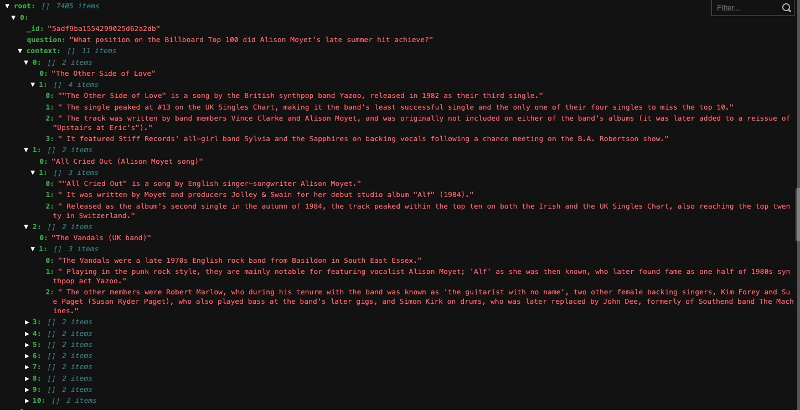

20032202050 左玉晖
动态构建带有上下文信息的知识图谱并进行解释性推理
增加了新的信息粒度和信息结构，会带来更大的想象空间
认知图谱=知识图谱+认知推理+逻辑表达
无意识的直觉系统+有意识的推理系统
隐式提取+显式推理
现有单跳QA问题及数据集存在以下不足：
1.对AI推理能力要求不高
2.问题和答案多样性受限
3.无可解释性的推理过程
多跳QA跨过机器阅读理解和人阅读理解鸿沟的挑战：
1.理解能力：单段问答模型倾向于在与问题匹配的意义中寻找答案，这不涉及复杂的推理。
2.可解释性：展示推理路径能够验证逻辑严格性，对质量保证系统的可靠性至关重要。但数据集中给出的是无序的句子级别的解释，但我们人可以通过逻辑一步一步给出有序的、实体级别的解释。
3.大规模的数据(时间成本)：任何QA系统都要处理大规模的知识，多跳阅读可能更多。
提出新的多跳QA框架CogQA
基于双过程理论System1:隐式提取，System2:显式推理
可以给出答案的解释路径
基于Bert和GNN处理HotpotQA数据集
数据集榜单持续3个月第一名
模仿大脑，提取相关信息，是直觉和无意识的抽取系统。
做法是从段落中提取与问题相关的hop实体和答案，并对其语义信息进行编码。
在System1基础上进行有意识的的可控的推理。
根据系统一提取的语义信息进行深度推理。 在系统一提取出的信息图上，进行信息传递和结点更新。并且指导系统一更好的提取下一跳实体。
迭代的最后给出最终的推理答案
\[\begin{aligned} \Delta = \sigma((AD^{-1})^T\sigma(XW_1)) \end{aligned} \]
\[\begin{aligned} X’=\sigma(XW_2+\Delta) \end{aligned} \]
112,779个问题，84%需要多跳推理。
现在GNN虽然使用关系边作为归纳偏执，但仍然无法指向可控、可解释、鲁棒的符号计算。
另辟蹊径，认知图谱基于双通道理论，是否还存在其他支撑理论，来构建新架构。
如何与人的记忆机理相结合，包括长期记忆和短期记忆，但工作模式和机理尚不清楚。长期记忆可能存储的是一个记忆模型，记忆模型不再是一个网络的概念，而是一个计算型的网络。
认知图谱如何与外界反馈相结合是一个全新的问题，当然可以考虑通过反馈强化学习来实现，但具体方法和实现模式还要深入研究。
双过程理论可以借鉴，用于多模态场景如FVQA